Figma 设计轻 3D 效果图标教程
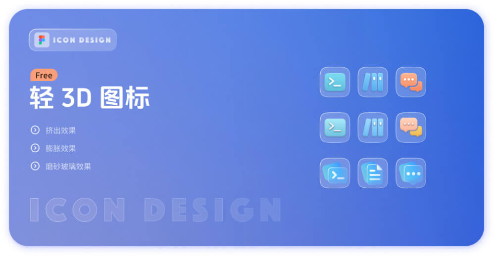
源文件：https://www.figma.com/community/file/1350347700225468380/3d
一、挤出效果
设计图标不同于建模，不需要十分逼真，提取主要特征即可，仅使用颜色、阴影、模糊来实现 3D 挤出效果。
以一个 3 层的图标为例，分别说明如何设置参数。
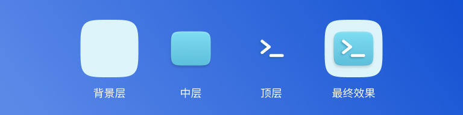
背景层
背景层最容易设置，可以填充最浅色的纯色，不添加任何装饰
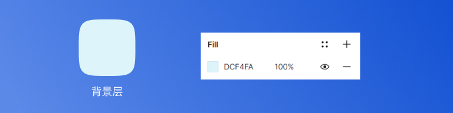
中层
中层需要填充一个渐变色，推荐使用同类色渐变，实践下来，将渐变两端颜色的 H 值设置为相差 20 以内会比较和谐，也可以参考一些色彩网站中配好的颜色。
设置浅色内阴影，模拟亮部，所以需要设置为从上往下投影。
设置深色内阴影，模拟暗部，所以需要设置为从下往上投影。
设置深色外阴影，模拟因与背景有一段距离而形成的阴影。
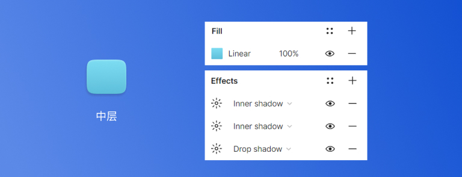 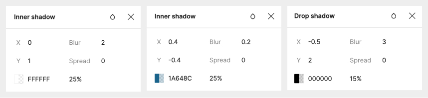
顶层
与中层同理，但可以减少一些细节，仅需添加白色填充和深色外阴影。
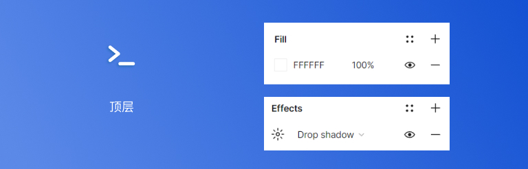
二、膨胀效果
同样是使用颜色、阴影、模糊参数来实现。

背景层
膨胀效果与挤出效果的背景层设置方法相同。
中层
渐变色填充
浅色内阴影
深色内阴影，范围稍微设置大一些
深色外阴影
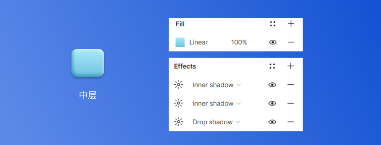 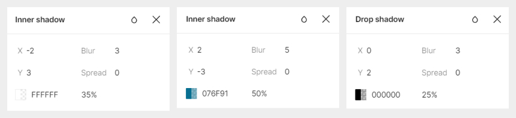
顶层
白色填充
深色内阴影
深色外阴影
阴影的取色参考中层，色相不变，明度降低
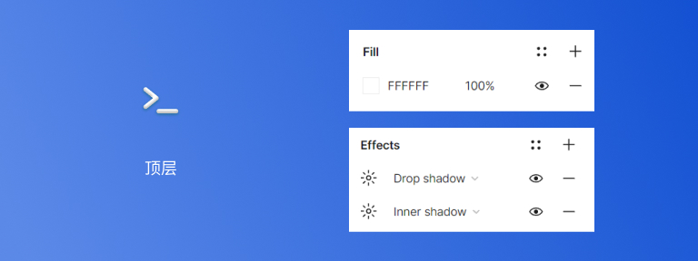
三、磨砂玻璃效果
磨砂玻璃效果以 4 层的图标为例。
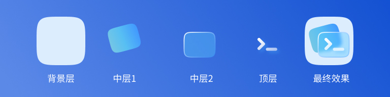
背景
同上，可深可浅。
中 1 层
渐变色填充。
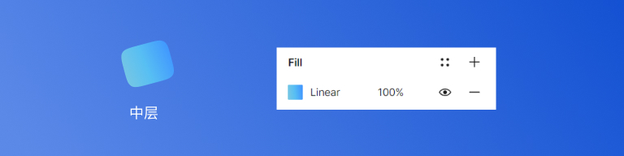
中 2 层
这一层是实现磨砂玻璃的关键层。
半透明纯色填充
浅色渐变描边
背景模糊
背景模糊需要结合半透明的填色才能看出效果
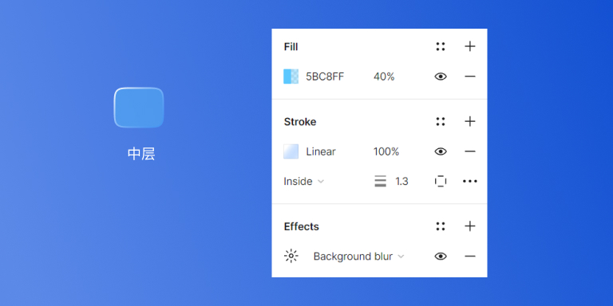
顶层
浅色渐变填充
深色外阴影
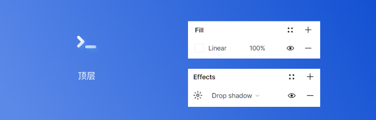
延伸阅读：Figma 的阴影和模糊效果 (Apply shadow or blur effects)

订阅： 本站所有内容首发于 tangweijuan.com，同步更新于微信公众号"Afterwork Time"，欢迎扫描下方二维码订阅。

发布于:
2024/3/15